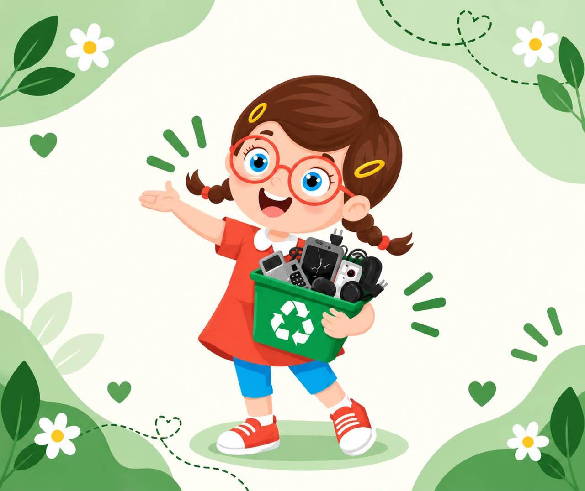

Oi! Eu sou a Teka!
Você sabia que aquele celular velho, cabo quebrado ou pilha gasta não podem ir para o lixo comum? Vem comigo que eu te ensino a cuidar do nosso planeta!
O que é Lixo Eletrônico?
São aparelhos que funcionam a pilha, bateria ou tomada que quebraram ou não têm mais uso: celulares, carregadores, fones, mouses e brinquedos eletrônicos.
Por que é Perigoso?
No lixo comum, eles vão para aterros e liberam chumbo e mercúrio. Esses metais pesados contaminam a terra, a água e fazem mal à saúde das pessoas e dos animais!
A Solução do Bem!
Ao levar esses itens até um Ponto de Coleta, as peças são separadas e recicladas para criar novos produtos, economizando recursos da natureza.
Assista e Ouça: A Descoberta da Teka!
Clique na tela abaixo para assistir à Teka explicando cada situação!
Oi, galerinha! Eu sou a Teka!
Eu adoro tecnologia! Uso todos os dias para estudar, pesquisar na internet, ouvir música, jogar e criar desenhos super legais! E vocês, também gostam?
O Desafio da Teka: Qual é a Lixeira Certa?
Complete os 15 itens para ganhar o seu Certificado de Defensor(a) da Natureza!
Dica da Teka: "Olhe bem a foto no cartão e clique na lixeira da cor correspondente!"
Certificado de Defensor(a) da Natureza
A Teka certifica com muito orgulho que
completou com sucesso todos os 15 desafios de descarte consciente, aprendendo a separar o Lixo Eletrônico, proteger a água, o solo e cuidar da saúde de todos!
PLANETA
Onde Descartar em Diadema e Região
A Teka ajuda você e sua família a encontrarem o ponto de coleta mais próximo para levar seus eletrônicos:
Carrefour Diadema
Av. Presidente Kennedy, 635 - Diadema
COOP Diadema
Av. Sete de Setembro, 200 - Diadema
Magazine Luiza
Rua Manoel da Nóbrega, 712 - Diadema
Sodimac Dicico
Av. Piraporinha, 50 - Diadema
UBS Taboão
Av. do Taboão, 4311 - São Bernardo
Carrefour Pauliceia
Av. Taboão, 2000 - São Bernardo
Lembrete da Teka: Peça sempre ajuda a um adulto para realizar o descarte! Para itens grandes (como geladeiras e fogões), consulte as condições de recebimento no local.